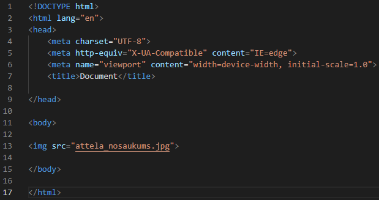

Attributes ir atribūti, kas tiek izmantoti HTML
elementu papildinformācijas piešķiršanai.
Par HTML Atribūtiem
Katram elementam var būt atribūts.
Lai izveidotu atribūtu tas ir jādeklarē elementa sākuma.
Atribūts pievieno papildus informāciju par kādu elementu.
Kādi ir atribūti?
Ir 2 veidu atribūti.
Atribūts "src" un "href"
To lietošanas piemērs
Lai mājaslapai pievienotu attēlu jaizmanto <'img>
Lai attēlu rādītu jaizmanto src atribūts.
